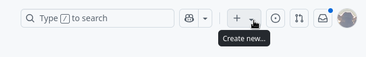
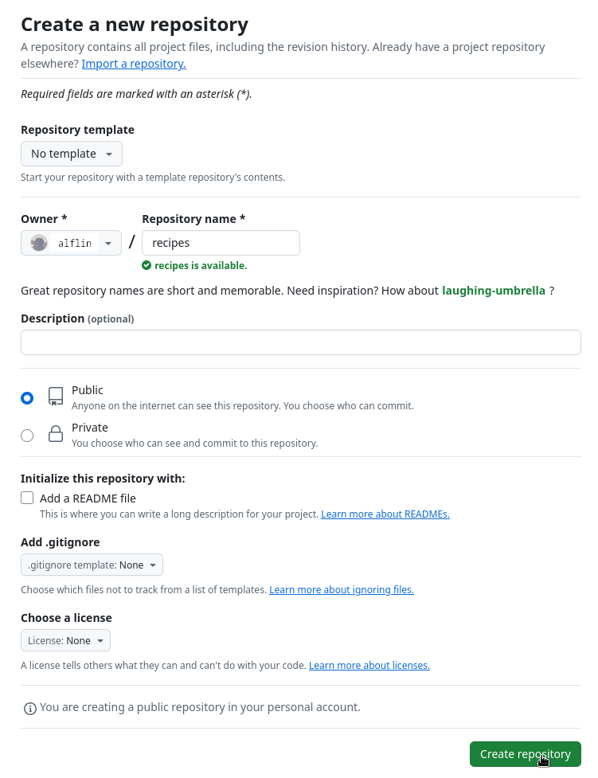
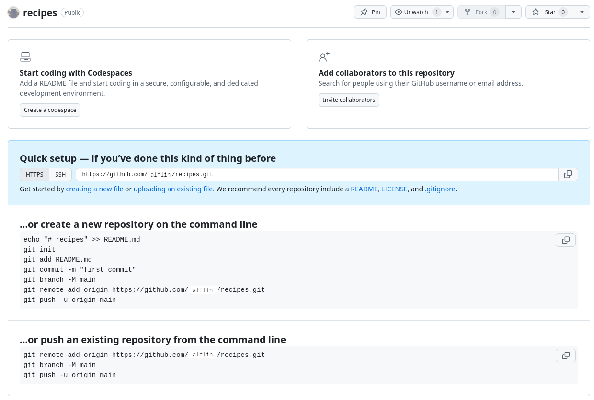
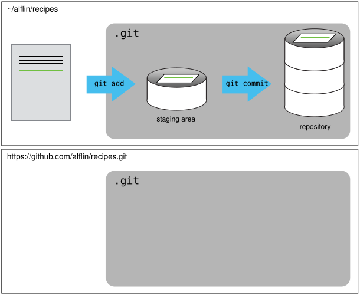
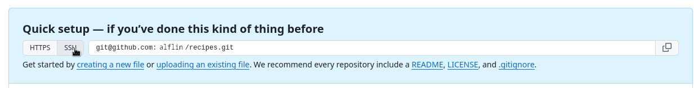
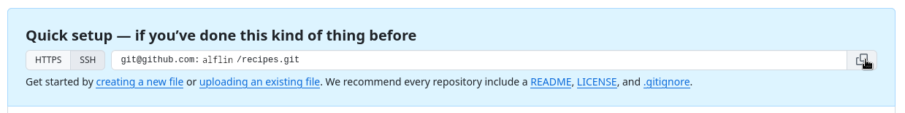
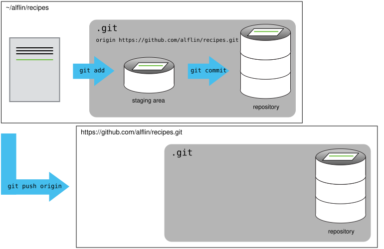
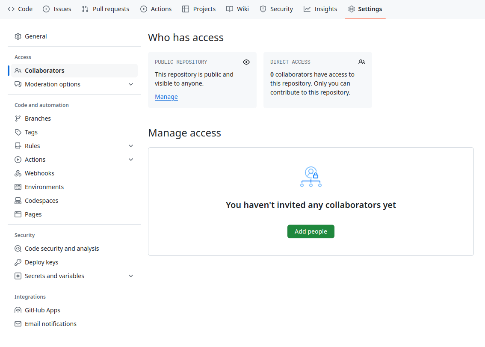
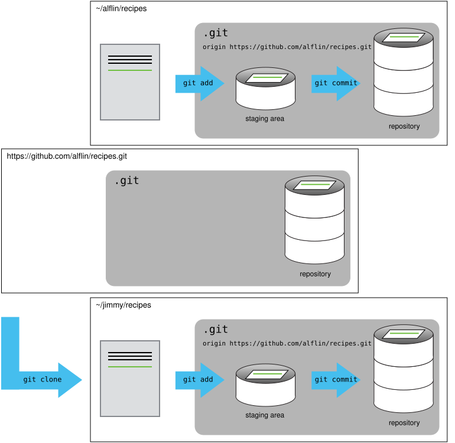
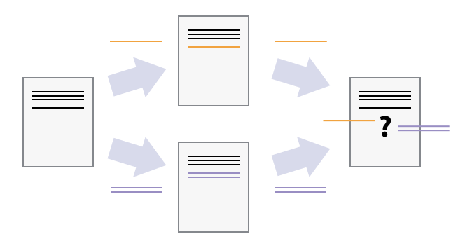

Day 3
For this part, you will again be using Fox, not your own computer.
Remember to enable the use of the git command on Fox by using module load git/#.#.#... as you did previously.
Repository on GitHub
We will again follow some lesson episodes:
NOTES
- Use the
recipesfolder you made last time for this lesson also. - If you are short on time, please skip the exercises, these are marked with a pencil symbol (✏️) at the left of the title.
Remotes in GitHub
Adapted from the Software Carpentry episode Remotes in GitHub.
Version control really comes into its own when we begin to collaborate with other people. We already have most of the machinery we need to do this; the only thing missing is to copy changes from one repository to another.
Systems like Git allow us to move work between any two repositories. In practice, though, it’s easiest to use one copy as a central hub, and to keep it on the web rather than on someone’s laptop. Most programmers use hosting services like GitHub, Bitbucket or GitLab to hold those main copies; we’ll explore the pros and cons of this in a later episode.
Let’s start by sharing the changes we’ve made to our current project with the world. To this end we are going to create a remote repository that will be linked to our local repository.
1. Create a remote repository
Log in to GitHub, then click on the icon in the top right corner to create a new repository called recipes:

Name your repository “recipes” and then click “Create Repository”.
Note: Since this repository will be connected to a local repository, it needs to be empty. Leave “Initialize this repository with a README” unchecked, and keep “None” as options for both “Add .gitignore” and “Add a license.” See the “GitHub License and README files” exercise below for a full explanation of why the repository needs to be empty.

As soon as the repository is created, GitHub displays a page with a URL and some information on how to configure your local repository:

This effectively does the following on GitHub’s servers:
$ mkdir recipes
$ cd recipes
$ git initIf you remember back to the earlier episode where we added and committed our earlier work on guacamole.md, we had a diagram of the local repository which looked like this:

Now that we have two repositories, we need a diagram like this:

Note that our local repository still contains our earlier work on guacamole.md, but the remote repository on GitHub appears empty as it doesn’t contain any files yet.
2. Connect local to remote repository
Now we connect the two repositories. We do this by making the GitHub repository a remote for the local repository. The home page of the repository on GitHub includes the URL string we need to identify it:

Click on the ‘SSH’ link to change the protocol from HTTPS to SSH.
We use SSH here because, while it requires some additional configuration, it is a security protocol widely used by many applications. The steps below describe SSH at a minimum level for GitHub.

Copy that URL from the browser, go into the local recipes repository, and run this command:
$ git remote add origin git@github.com:alflin/recipes.gitMake sure to use the URL for your repository rather than Alfredo’s: the only difference should be your username instead of alflin.
origin is a local name used to refer to the remote repository. It could be called anything, but origin is a convention that is often used by default in git and GitHub, so it’s helpful to stick with this unless there’s a reason not to.
We can check that the command has worked by running git remote -v:
$ git remote -vorigin git@github.com:alflin/recipes.git (fetch)
origin git@github.com:alflin/recipes.git (push)We’ll discuss remotes in more detail in the next episode, while talking about how they might be used for collaboration.
4. Push local changes to a remote
Now that authentication is setup, we can return to the remote. This command will push the changes from our local repository to the repository on GitHub:
$ git push origin mainSince Alfredo set up a passphrase, it will prompt him for it. If you completed advanced settings for your authentication, it will not prompt for a passphrase.
Enumerating objects: 16, done.
Counting objects: 100% (16/16), done.
Delta compression using up to 8 threads.
Compressing objects: 100% (11/11), done.
Writing objects: 100% (16/16), 1.45 KiB | 372.00 KiB/s, done.
Total 16 (delta 2), reused 0 (delta 0)
remote: Resolving deltas: 100% (2/2), done.
To https://github.com/alflin/recipes.git
* [new branch] main -> mainIf you see something like this:
git@github.com: Permission denied (publickey).
fatal: Could not read from remote repository.
Please make sure you have the correct access rights
and the repository exists.This indicates you may not have set up SSH keys (correctly) for Github as described on Day 1.
If you are asked for your username and password, you probably used the https:// URL instead of an SSH URL (git@github.com:...). Ask the assistants or teacher for help fixing the URL (this involves deleting the remote and adding the correct one).
If your operating system has a password manager configured, git push will try to use it when it needs your username and password. For example, this is the default behavior for Git Bash on Windows. If you want to type your username and password at the terminal instead of using a password manager, type:
$ unset SSH_ASKPASSin the terminal, before you run git push. Despite the name, Git uses SSH_ASKPASS for all credential entry, so you may want to unset SSH_ASKPASS whether you are using Git via SSH or https.
You may also want to add unset SSH_ASKPASS at the end of your ~/.bashrc to make Git default to using the terminal for usernames and passwords.
Our local and remote repositories are now in this state:

You may see a -u option used with git push in some documentation. This option is synonymous with the --set-upstream-to option for the git branch command, and is used to associate the current branch with a remote branch so that the git pull command can be used without any arguments. To do this, simply use git push -u origin main once the remote has been set up.
We can pull changes from the remote repository to the local one as well:
$ git pull origin mainFrom https://github.com/alflin/recipes
* branch main -> FETCH_HEAD
Already up-to-date.Pulling has no effect in this case because the two repositories are already synchronized. If someone else had pushed some changes to the repository on GitHub, though, this command would download them to our local repository.
Github also allows you to skip the command line and upload files directly to your repository without having to leave the browser. There are two options. First you can click the “Upload files” button in the toolbar at the top of the file tree. Or, you can drag and drop files from your desktop onto the file tree. You can read more about this on this GitHub page.
Pairing up
For the next part, pair up with someone at your table. You should agree on roles:
- One person is the Owner and will be using their
recipesrepository on GitHub and Fox - The other person is the Collaborator. It is very important the collaborator no longer works in their
recipesfolder on Fox! Usecd ..before continuing.
Collaborating
Adapted from the Software Carpentry episode Collaborating.
In the commands below, replace ec-username with your Educloud username.
For the next step, get into pairs. One person will be the “Owner” and the other will be the “Collaborator”. The goal is that the Collaborator add changes into the Owner’s repository. We will switch roles at the end, so both persons will play Owner and Collaborator.
If you’re working through this lesson on your own, you can carry on by opening a second terminal window. This window will represent your partner, working on another computer. You won’t need to give anyone access on GitHub, because both ‘partners’ are you.
The Owner needs to give the Collaborator access. In your repository page on GitHub, click the “Settings” button on the right, select “Collaborators”, click “Add people”, and then enter your partner’s username.

To accept access to the Owner’s repo, the Collaborator needs to go to https://github.com/notifications or check for email notification. Once there she can accept access to the Owner’s repo.
Next, the Collaborator needs to download a copy of the Owner’s repository to her machine. This is called “cloning a repo”.
The Collaborator doesn’t want to overwrite her own version of recipes.git, so needs to clone the Owner’s repository to a different location than her own repository with the same name.
To clone the Owner’s repo into her /fp/homes01/u01/ec-username/BIOS-IN5410 folder, the Collaborator enters:
$ git clone git@github.com:alflin/recipes.git /fp/homes01/u01/ec-username/BIOS-IN5410/alflin-recipesReplace ‘alflin’ with the Owner’s username.
If you choose to clone without the clone path (/fp/homes01/u01/ec-username/BIOS-IN5410/alflin-recipes) specified at the end, you will clone inside your own recipes folder! Make sure to navigate to the /fp/homes01/u01/ec-username/BIOS-IN5410 folder first.

The Collaborator can now make a change in her clone of the Owner’s repository, exactly the same way as we’ve been doing before:
$ cd /fp/homes01/u01/ec-username/BIOS-IN5410/alflin-recipes
$ nano hummus.md
$ cat hummus.md# Hummus
## Ingredients
* chickpeas
* lemon
* olive oil
* salt$ git add hummus.md
$ git commit -m "Add ingredients for hummus" 1 file changed, 6 insertion(+)
create mode 100644 hummus.mdThen push the change to the Owner’s repository on GitHub:
$ git push origin mainEnumerating objects: 4, done.
Counting objects: 4, done.
Delta compression using up to 4 threads.
Compressing objects: 100% (2/2), done.
Writing objects: 100% (3/3), 306 bytes, done.
Total 3 (delta 0), reused 0 (delta 0)
To https://github.com/alflin/recipes.git
9272da5..29aba7c main -> mainNote that we didn’t have to create a remote called origin: Git uses this name by default when we clone a repository. (This is why origin was a sensible choice earlier when we were setting up remotes by hand.)
Take a look at the Owner’s repository on GitHub again, and you should be able to see the new commit made by the Collaborator. You may need to refresh your browser to see the new commit.
In this episode and the previous one, our local repository has had a single “remote”, called origin. A remote is a copy of the repository that is hosted somewhere else, that we can push to and pull from, and there’s no reason that you have to work with only one. For example, on some large projects you might have your own copy in your own GitHub account (you’d probably call this origin) and also the main “upstream” project repository (let’s call this upstream for the sake of examples). You would pull from upstream from time to time to get the latest updates that other people have committed.
Remember that the name you give to a remote only exists locally. It’s an alias that you choose - whether origin, or upstream, or alfred - and not something intrinstic to the remote repository.
The git remote family of commands is used to set up and alter the remotes associated with a repository. Here are some of the most useful ones:
git remote -vlists all the remotes that are configured (we already used this in the last episode)git remote add [name] [url]is used to add a new remotegit remote remove [name]removes a remote. Note that it doesn’t affect the remote repository at all - it just removes the link to it from the local repo.git remote set-url [name] [newurl]changes the URL that is associated with the remote. This is useful if it has moved, e.g. to a different GitHub account, or from GitHub to a different hosting service. Or, if we made a typo when adding it!git remote rename [oldname] [newname]changes the local alias by which a remote is known - its name. For example, one could use this to changeupstreamtoalfred.
To download the Collaborator’s changes from GitHub, the Owner now enters:
$ git pull origin mainremote: Enumerating objects: 4, done.
remote: Counting objects: 100% (4/4), done.
remote: Compressing objects: 100% (2/2), done.
remote: Total 3 (delta 0), reused 3 (delta 0), pack-reused 0
Unpacking objects: 100% (3/3), done.
From https://github.com/alflin/recipes
* branch main -> FETCH_HEAD
9272da5..29aba7c main -> origin/main
Updating 9272da5..29aba7c
Fast-forward
hummus.md | 5 +
1 file changed, 5 insertion(+)
create mode 100644 hummus.mdNow the three repositories (Owner’s local, Collaborator’s local, and Owner’s on GitHub) are back in sync.
In practice, it is good to be sure that you have an updated version of the repository you are collaborating on, so you should git pull before making our changes. The basic collaborative workflow would be:
- update your local repo with
git pull origin main, - make your changes and stage them with
git add, - commit your changes with
git commit -m, and - upload the changes to GitHub with
git push origin main
It is better to make many commits with smaller changes rather than of one commit with massive changes: small commits are easier to read and review.
Conflicts
Adapted from the Software Carpentry episode Conflicts.
As soon as people can work in parallel, they’ll likely step on each other’s toes. This will even happen with a single person: if we are working on a piece of software on both our laptop and a server in the lab, we could make different changes to each copy. Version control helps us manage these conflicts by giving us tools to resolve overlapping changes.
To see how we can resolve conflicts, we must first create one. The file guacamole.md currently looks like this in both partners’ copies of our recipes repository:
$ cat guacamole.md# Guacamole
## Ingredients
* avocado
* lime
* salt
## InstructionsLet’s add a line to the collaborator’s copy only:
$ nano guacamole.md
$ cat guacamole.md# Guacamole
## Ingredients
* avocado
* lime
* salt
## Instructions
* put one avocado into a bowl.and then push the change to GitHub:
$ git add guacamole.md
$ git commit -m "First step on the instructions"[main 5ae9631] First step on the instructions
1 file changed, 1 insertion(+)$ git push origin mainEnumerating objects: 5, done.
Counting objects: 100% (5/5), done.
Delta compression using up to 8 threads
Compressing objects: 100% (3/3), done.
Writing objects: 100% (3/3), 331 bytes | 331.00 KiB/s, done.
Total 3 (delta 2), reused 0 (delta 0)
remote: Resolving deltas: 100% (2/2), completed with 2 local objects.
To https://github.com/alflin/recipes.git
29aba7c..dabb4c8 main -> mainNow let’s have the owner make a different change to their copy without updating from GitHub:
$ nano guacamole.md
$ cat guacamole.md# Guacamole
## Ingredients
* avocado
* lime
* salt
## Instructions
* peel the avocadosWe can commit the change locally:
$ git add guacamole.md
$ git commit -m "Add first step"[main 07ebc69] Add first step
1 file changed, 1 insertion(+)but Git won’t let us push it to GitHub:
$ git push origin mainTo https://github.com/alflin/recipes.git
! [rejected] main -> main (fetch first)
error: failed to push some refs to 'https://github.com/alflin/recipes.git'
hint: Updates were rejected because the remote contains work that you do
hint: not have locally. This is usually caused by another repository pushing
hint: to the same ref. You may want to first integrate the remote changes
hint: (e.g., 'git pull ...') before pushing again.
hint: See the 'Note about fast-forwards' in 'git push --help' for details.
Git rejects the push because it detects that the remote repository has new updates that have not been incorporated into the local branch. What we have to do is pull the changes from GitHub, merge them into the copy we’re currently working in, and then push that. Let’s start by pulling:
$ git pull origin mainremote: Enumerating objects: 5, done.
remote: Counting objects: 100% (5/5), done.
remote: Compressing objects: 100% (1/1), done.
remote: Total 3 (delta 2), reused 3 (delta 2), pack-reused 0
Unpacking objects: 100% (3/3), done.
From https://github.com/alflin/recipes
* branch main -> FETCH_HEAD
29aba7c..dabb4c8 main -> origin/main
Auto-merging guacamole.md
CONFLICT (content): Merge conflict in guacamole.md
Automatic merge failed; fix conflicts and then commit the result.If you see the below in your output, Git is asking what it should do.
hint: You have divergent branches and need to specify how to reconcile them.
hint: You can do so by running one of the following commands sometime before
hint: your next pull:
hint:
hint: git config pull.rebase false # merge (the default strategy)
hint: git config pull.rebase true # rebase
hint: git config pull.ff only # fast-forward only
hint:
hint: You can replace "git config" with "git config --global" to set a default
hint: preference for all repositories. You can also pass --rebase, --no-rebase,
hint: or --ff-only on the command line to override the configured default per
hint: invocation.In newer versions of Git it gives you the option of specifying different behaviours when a pull would merge divergent branches. In our case we want ‘the default strategy’. To use this strategy run the following command to select it as the default thing git should do.
$ git config pull.rebase falseThen attempt the pull again.
$ git pull origin mainThe git pull command updates the local repository to include those changes already included in the remote repository. After the changes from remote branch have been fetched, Git detects that changes made to the local copy overlap with those made to the remote repository, and therefore refuses to merge the two versions to stop us from trampling on our previous work. The conflict is marked in in the affected file:
$ cat guacamole.md# Guacamole
## Ingredients
* avocado
* lime
* salt
## Instructions
<<<<<<< HEAD
* peel the avocados
=======
* put one avocado into a bowl.
>>>>>>> dabb4c8c450e8475aee9b14b4383acc99f42af1dOur change is preceded by <<<<<<< HEAD. Git has then inserted ======= as a separator between the conflicting changes and marked the end of the content downloaded from GitHub with >>>>>>>. (The string of letters and digits after that marker identifies the commit we’ve just downloaded.)
It is now up to us to edit this file to remove these markers and reconcile the changes. We can do anything we want: keep the change made in the local repository, keep the change made in the remote repository, write something new to replace both, or get rid of the change entirely. Let’s replace both so that the file looks like this:
$ cat guacamole.md# Guacamole
## Ingredients
* avocado
* lime
* salt
## Instructions
* peel the avocados and put them into a bowl.To finish merging, we add guacamole.md to the changes being made by the merge and then commit:
$ git add guacamole.md
$ git statusOn branch main
All conflicts fixed but you are still merging.
(use "git commit" to conclude merge)
Changes to be committed:
modified: guacamole.md
$ git commit -m "Merge changes from GitHub"[main 2abf2b1] Merge changes from GitHubNow we can push our changes to GitHub:
$ git push origin mainEnumerating objects: 10, done.
Counting objects: 100% (10/10), done.
Delta compression using up to 8 threads
Compressing objects: 100% (6/6), done.
Writing objects: 100% (6/6), 645 bytes | 645.00 KiB/s, done.
Total 6 (delta 4), reused 0 (delta 0)
remote: Resolving deltas: 100% (4/4), completed with 2 local objects.
To https://github.com/alflin/recipes.git
dabb4c8..2abf2b1 main -> mainGit keeps track of what we’ve merged with what, so we don’t have to fix things by hand again when the collaborator who made the first change pulls again:
$ git pull origin mainremote: Enumerating objects: 10, done.
remote: Counting objects: 100% (10/10), done.
remote: Compressing objects: 100% (2/2), done.
remote: Total 6 (delta 4), reused 6 (delta 4), pack-reused 0
Unpacking objects: 100% (6/6), done.
From https://github.com/alflin/recipes
* branch main -> FETCH_HEAD
dabb4c8..2abf2b1 main -> origin/main
Updating dabb4c8..2abf2b1
Fast-forward
guacamole.md | 2 +-
1 file changed, 1 insertion(+), 1 deletion(-)We get the merged file:
$ cat guacamole.md# Guacamole
## Ingredients
* avocado
* lime
* salt
## Instructions
* peel the avocados and put them into a bowl.We don’t need to merge again because Git knows someone has already done that.
Git’s ability to resolve conflicts is very useful, but conflict resolution costs time and effort, and can introduce errors if conflicts are not resolved correctly. If you find yourself resolving a lot of conflicts in a project, consider these technical approaches to reducing them:
- Pull from upstream more frequently, especially before starting new work
- Use topic branches to segregate work, merging to main when complete
- Make smaller more atomic commits
- Push your work when it is done and encourage your team to do the same to reduce work in progress and, by extension, the chance of having conflicts
- Where logically appropriate, break large files into smaller ones so that it is less likely that two authors will alter the same file simultaneously
Conflicts can also be minimized with project management strategies:
- Clarify who is responsible for what areas with your collaborators
- Discuss what order tasks should be carried out in with your collaborators so that tasks expected to change the same lines won’t be worked on simultaneously
- If the conflicts are stylistic churn (e.g. tabs vs. spaces), establish a project convention that is governing and use code style tools (e.g.
htmltidy,perltidy,rubocop, etc.) to enforce, if necessary
Other ways to collaborate
As a final exercise, you will learn how others can contribute to your repository even when they don’t have been given access as a collaborator.
Your teachers will suggest a change to the file guacamole.md in your repository. Please let them know where your repository is on GitHub.
- Add a link to your GitHub repository to this Google Sheet.
- Keep an eye on your email
- Find out what change the teacher has proposed
- Accept the change by Merging the Pull Request
- Pull the changes to your repository on Fox and inspect your file(s)
Syncing last week’s work to GitHub
Last week you created a few SLURM scripts. Consider committing these to version control!
- Create a new git repository in the folder with these scripts
- Commit the SLURM scripts
- Make a new GitHub repository
- Add it as a remote to your version control folder on Fox
- Push the commits from it to your new repository on GitHub